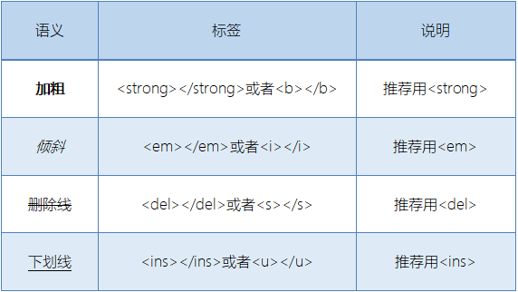
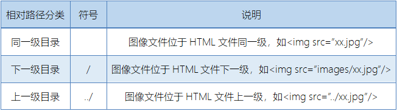
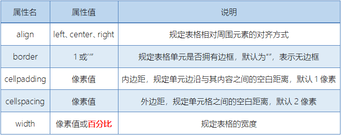
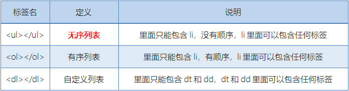
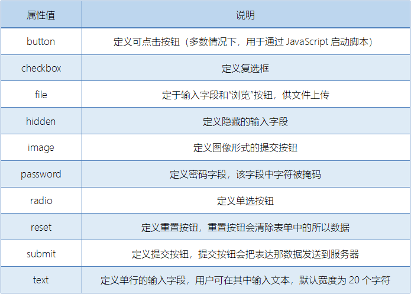

HTML笔记
自己看视频课程的时候做的笔记
1、文档声明标签 <!DOCTYPE html> 告诉浏览器这个页面采取html5版本来显示页面
2、lang标签<html lang=”en”>告诉浏览器或搜索引擎这是一个英文网站
3、段落标签 <p></p> 换行标签<br />
4、文本格式化标签

5、<div>和<span>标签
<div></div> 块元素 一行只能一个 可以理解为“大盒子”
<span></span> 行内元素 一行可以多个 可以理解为“小盒子”
6、图像标签
<img src=”img.jpg”/ alt= “图像显示不出时出现的替换文本” title= “鼠标放在图像上的提示文本”> 以及 宽weight、高height、边框粗细border
7、相对路径和绝对路径

绝对路径是指目录下的绝对位置，从盘符开始的路径，也可以是网址
例：<img src=”D:\images\xx.jpg”/>或<img src=”http://www.xx.com/xx.jpg”/>
8、超链接标签
<a href=”http://www.baidu.com” target=”_blank”>百度</a>
target打开窗口方式，默认是_self当前窗口打开，_blank为新窗口打开
跳转空链接<a href=”#”>空</a>
网站内部链接可直接链接名称 <a href=”index.html” >首页</a>
超链接可以添加：文本、图像、表格、音频、视频等
9、锚点链接
当我们点击时，会快速定位到页面中的某个位置
链接文本的href设置属性值为#名字的形式，如<a href=“#one”>第一章</a>
目标位置加上id，如<h3 id=“one”>第一章</h3>
10、注释标签
用于提示但不显示在页面中的文本
<!-- 我是注释--> 快捷键：ctrl+/
11、特殊字符
空格符  ； 大于号> > 小于号< < 和号& &
12、表格标签（重点） 严格嵌套
<table>
<tr> 定义表格中的行
<th>表头默认加粗居中</th>
<td>单元格</td>
</tr>
</table>
13、表格属性 很少用于行内，多数情况用CSS来设置
14、“合并单元格”
Colspan=”合并单元格数量” 横向占据的单元格数量，可理解为宽度为几个单元格
rowspan=”合并单元格数量” 竖向占据的单元格数量，可理解为高度为几个单元格
15、列表标签

16、表单标签
完整的表单由表单域、表单控件（也称表单元素）、提示信息 三部分构成
<form>定义一个表单域
<form action=“url地址” method=“提交方式(GET、POST)” name=“表单域名称”>表单元素</form>
17、表单元素
<input type=”text”>

18、input属性
<input type=”text” name=”username” value=“请输入用户名” maxlength=”8”>
<input type=”radio” type=”checkbox” name=”sex” checked=”checked”>

radio（或者checkbox）如果是同一组，我们必须给他们命名相同的name
19、<label>标签
<label>标签为input元素定义标注（标签），用于绑定一个表单元素，当点击<label>标签内的文本时，浏览器就会自动将光标转到或选择对应的表单元素上。
<label for=”sex”>男</label>
<input type=”radio” name=”sex” id=“sex” />
<label>标签的for属性应当与相关元素的id元素相同。
20、select下拉表单
<select>
<option></option>
<option></option>
<option></option>
</select>
<select>中至少包含一对<option>
在<option>中定义selected=”selected”时，当前项即为默认选中项。
21、<textarea>文本域标签
用于定义多行文本输入的控件
<textarea rows=”3” cols=”20”></textarea>
rows=“显示的行数”，cols=“每行中的字符数”，实际开发中很少用，都是用CSS来改变大小z。